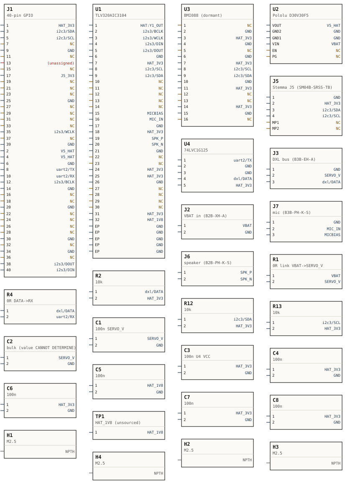
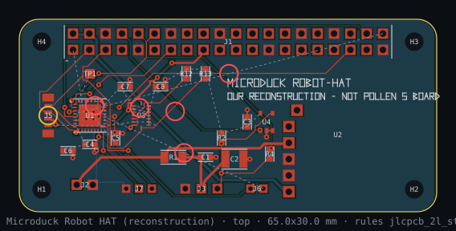
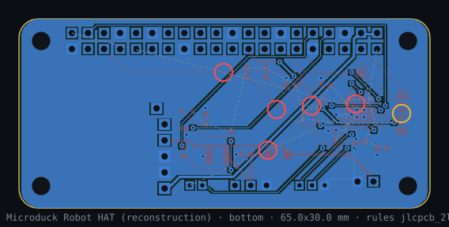
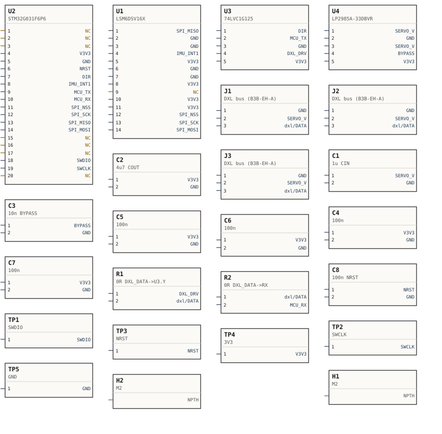
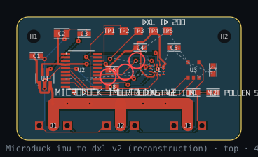
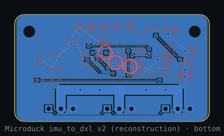
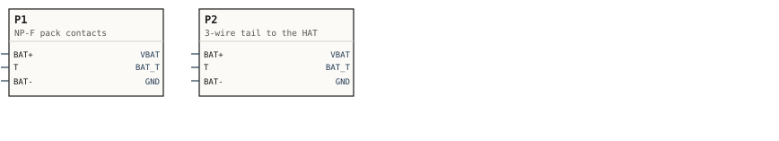
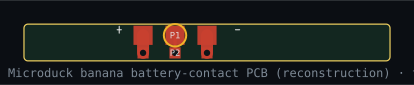
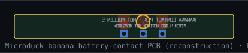

The three boards Pollen does not publish — Robot HAT, imu_to_dxl v2 and the banana battery-contact strip — captured, laid out, design-rule-checked and quoted.
Pollen Robotics publishes the Microduck’s firmware, its device-tree overlays and its simulation meshes. It publishes no PCB, no schematic and no BOM for any of the three custom boards, and the press kit asks that the robot not be described as open-source hardware. Everything in this document is our reconstruction from the published behaviour plus the vendor datasheets of the chips that behaviour names.
Nothing here claims to match Pollen’s boards. Not the layout, not the connector placement, not the part choice. Where a fact is published, it is quoted with its file and line. Where it is not, the choice is ours, it is numbered (D1–D8, E1–E8, B1–B6), and the option it beat is written down beside it.
| Board | What it does | Outline (mm) | Layers | DRC |
|---|---|---|---|---|
microduck_robot_hat | The board that sits on the Radxa Zero 3W's 40-pin header: battery in, 5 V out to the host, the servo bus behind a half-duplex buffer, the TLV320AIC3104 codec, the dormant BMI088, the Stemma J5 I2C port, speaker and mic. | 65.000 × 30.000 | 2 | FAIL |
microduck_imu_to_dxl | An LSM6DSV16X presented on the Dynamixel bus as a Protocol-2 slave, ID 200, serving a 12-byte block at register 124. Three bus ports are fitted so the daisy chain can branch here — which is option A of an open question, not a fact. | 40.000 × 22.000 | 2 | FAIL |
microduck_banana_contact | The passive strip that meets the NP-F pack's three terminals through the window in the power_support head plate and carries the pack out on a soldered three-wire tail. | 45.800 × 5.100 | 2 | CANNOT DETERMINE |
Table 1. The three boards. The DRC column is read out of each board’s own out/fab/README.txt — the file a fab would receive — so this document cannot state a verdict the Gerbers do not carry.
Defects this lane MEASURED in its own earlier work and fixed. Each says what was wrong, how it was caught, and what proves the fix.
| Board | The defect | What was wrong | What caught it | The fix, and what proves it |
|---|---|---|---|---|
robot-hat | The i2s3/DIN spine started at the wrong header pad | board.py claimed a hand-laid track on net i2s3/DIN but took its start point from J1 pad 38. Pad 38 is I2S3_SDI and carries i2s3/DOUT; the DIN pad is 40. The diagonal it then took into the codec also cut across U1.2 (BCLK) and U1.3 (WCLK). | The DRC, as three 0.000 mm clearance FAILs: 'track i2s3/DIN on F.Cu / pad J1.38', '/ pad U1.3', '/ pad U1.2'. | Verified against the Radxa ZERO 3W product brief RAD-DOC-0084 40-pin table (fetched 2026-09-02): pin 40 is 'GPIO3_A5 I2S3_SDO_M0' and pin 38 is 'GPIO3_A6 I2S3_SDI_M0'. netlist.py maps the HAT provision I2S3_SDO to net i2s3/DIN ('DIN = SoC SDO, DOUT = SoC SDI'), so the codec's data INPUT belongs on the SoC's data OUTPUT, pin 40. The track now leaves pad 40 and enters the codec's pin 4 horizontally along pin 4's own y, so it crosses neither 2 nor 3. |
robot-hat | The board outline was the Raspberry Pi Zero's, by analogy | CORNER = 3.0, taken from RPI-ZERO-V1_2's 'CORNER RADIUS = 3.0mm', on the reasoning that the HAT sits on a Pi-Zero footprint. | Measuring Pollen's OWN mesh instead of reasoning from an analogue. 36 arc points of elec_rpi_robot_hat_pcb.stl fit a 3.5000 mm radius about the mounting-hole centre to r min 3.5000 / r max 3.5001; an R3.0 arc about an offset centre fits the same points at 3.04 with 0.4 mm of scatter. | CORNER = 3.5, and the full measured hole table published in section 2 so anyone can check the fit themselves. |
imu-to-dxl | The bus power path was autorouted at 0.400 mm | SERVO_V was left to the router at 0.400 mm. A DYNAMIXEL bus daisy-chains POWER as well as data, so this board's copper carries every device downstream of it — with wiring/CABLES.md's harness, both leg chains. | Asking what the copper CARRIES rather than what the DRC checks. The DRC does not fail an under-sized power track when the demand is undocumented; it says CANNOT DETERMINE, which is not the same as fine. | All three bus ports moved onto one edge (board 34.000 x 24.000 -> 40.000 x 22.000) and SERVO_V hand-laid as a 2.000 mm comb on F.Cu, mirrored on B.Cu with four stitching vias, claimed before the router runs. 3.953 A per layer at dT 10 vs 1.231 A. |
robot-hat | Two IPC-2221 figures were typed by hand and were wrong | The power-width comment and note read '0.400 mm -> 1.29 A' and '0.800 mm -> 3.05 A at dT 20'. The true values are 1.231 A and 2.760 A. | Recomputing them. The other two boards already had an ipc2221_amps() in the file and their numbers were right; the HAT's were prose. | robot-hat/board.py now has the same function and every power figure in its notes is formatted from it, including the 1.200 mm alternative it rejected. |
imu-to-dxl | The connector count was claimed as settled when it is not | The board file said the wiring lane 'settles' the connector count at three, from the harness rather than from a photograph. | ce-parts/microduck-imu-to-dxl/component.json record.connector_count, corrected the same night by another lane: a DYNAMIXEL bus is MULTIDROP, so the harness may fork at a Y-splice instead of at a device, and Open Duck Mini v2 does exactly that. | The file now says the count is CANNOT DETERMINE, fits option A because that is what wiring/cables.json already assumes, and marks J3 as the connector where the open question shows: leave it unstuffed and the board is option B. |
Table 1.1. Five defects measured in this lane’s own work and closed. Three were caught by the design-rule check or by a measurement; two were caught by asking a question the check does not ask.
One of the three boards is not entirely unpublished. reference/pollen-microduck-rl/assets/elec_rpi_robot_hat_pcb.stl is Pollen’s geometry for the Robot HAT, and it was measured on 2026-09-02. Until then this project’s HAT outline came from the Raspberry Pi Zero mechanical drawing by analogy. It no longer does.
Method. Binary-STL reader in plain python3. Every triangle whose normal is +Z and whose three vertices lie on the top face (z = 0.840 mm) was taken; the edges appearing exactly once were walked into closed loops; each loop was fitted for roundness. 62 boundary loops. No tolerance was loosened to make a feature appear. Placement: spec/mesh-placements.json: body jaw_soft, pos (26.940, 28.994, -51.900) mm, quat wxyz (0.707107, 0, 0, -0.707107)
| Feature | Measured | Where | Status |
|---|---|---|---|
| Outline | 65.000 x 30.000 mm | x -3.500 .. 61.500, y -26.500 .. 3.500 about the mesh origin | MEASURED |
| Thickness | 0.840 mm | z 0.000 .. 0.840. Not a JLCPCB thickness ('0.4/0.6/0.8/1.0/1.2/1.6/2.0 mm'); read as a modelling simplification, and our board is built on 1.6 mm | MEASURED, not adopted |
| Corner radius | 3.5000 mm | 36 arc points fitted about the mounting-hole centre: r min 3.5000, r max 3.5001. The Raspberry Pi Zero drawing's 'CORNER RADIUS = 3.0mm' does NOT fit these points (3.04 with 0.4 mm scatter about an offset centre) | MEASURED — corrected board.py from 3.0 |
| Mounting holes | 4 x dia 2.7000 mm | (0.000, 0.000), (58.000, 0.000), (0.000, -23.000), (58.000, -23.000) — the 58 x 23 pattern at 3.500 inset | MEASURED, agrees with RPI-ZERO-V1_2 '4x M2.5 ... 2.75 +/- 0.05mm' |
| 40-pin header | 40 x dia 1.0200 mm | y = +1.270 and -1.270; x = 4.870 to 53.130 in 2.540 steps (20 columns). Field centre x = 29.000 = board centre | MEASURED — the header IS a full 2x20 and IS centred |
| Header pegs | 2 x dia 2.0000 mm | (6.140, 0.000) and (51.860, 0.000) — 1.270 inboard of the outer pin columns, on the header centre line | MEASURED; FUNCTION CANNOT DETERMINE |
| Connector holes | 14 x dia 0.9500 mm on 2.500 mm pitch | x 43.850 and 48.650, y -23.000/-20.500/-18.000/-15.500 (4 each); x 53.500 and 58.300, y -17.450/-14.950/-12.450 (3 each). Column pairs 4.800 mm apart | MEASURED; FAMILY CANNOT DETERMINE |
| Lone hole | 1 x dia 1.0000 mm | (31.200, -11.900) | MEASURED; FUNCTION CANNOT DETERMINE |
Table 2. Every through-feature of the HAT mesh, read off the solid.
The 2.500 mm pitch with a 0.950 mm hole is the JST XH/EH signature — JST eXH's PC board layout gives 'dia 1' at 2.5 and eEH 'dia 0.9 +0.1/0' at 2.5, and 0.950 sits exactly between them — and the community HAT built for the same robot says 'The connectors are XH 2.54mm' (github.com/blublear/open-duck-mini-hat README, fetched 2026-09-02). Two 3-pin groups is what a bus that has to branch needs, and 3-pin at 2.5 mm is the XL330's own connector. WHAT COULD NOT BE SETTLED is the 4.800 mm gap between the two columns of each pair. Two same-side vertical single-row headers cannot stand that close (B*B-XH-A body 5.75 mm deep, B3B-EH-A housing 10.0 mm long), so it is not two XH/EH headers side by side. Nor is it one dual-row part: the nearest 2.5 mm dual-row through-hole family is JST's JFA J2000 (e.g. B08B-J21DK-GGXR, '8 Contact(s), 2.5 mm Pitch, 2 Row, Shrouded'), and its ROW PITCH IS 2.5 mm, not 4.8 — searched 2026-09-02 across JST, Molex and distributor listings and nothing with a 2.5 x 4.8 mm grid came back. Best-supported reading: one fitted header per pair plus a duplicate solder-only row 4.800 mm away — 'connector OR wires'. Reading it beat: two headers mounted on opposite faces of the board, which the 4.800 mm gap does allow but which nothing else supports. WHAT WOULD SETTLE IT: one photograph of a production HAT's connector side, or a teardown.
This package does NOT place its connectors on that pattern. Our connectors come from the netlist's needs and each part's own JST drawing, which is a different claim from 'this is where Pollen put them'. The measurement is published here so the difference is visible instead of hidden.
The board that sits on the Radxa Zero 3W's 40-pin header: battery in, 5 V out to the host, the servo bus behind a half-duplex buffer, the TLV320AIC3104 codec, the dormant BMI088, the Stemma J5 I2C port, speaker and mic.
Stack-up. JLCPCB 2-layer 1.6 mm, 1 oz — the commodity default · 2 layers · 1.6 mm · corner radius 3.500 mm.
Surface finish. HASL (lead-free) — the fab default; no function on this board needs a flat gold surface
Mounting. 4 x M2.5 clearance on the 58.000 x 23.000 pattern, 3.500 mm inset — measured dia 2.7000 in Pollen's mesh, and 'DRILLED TO 2.75 +/- 0.05mm' in RPI-ZERO-V1_2
Geometry evidence. reference/pollen-microduck-rl/assets/elec_rpi_robot_hat_pcb.stl
| # | Decision | The published fact behind it | The option it beat |
|---|---|---|---|
D1 | 5 V rail: Pololu D30V30F5 buck module (U2) from the pack | vendor spec page 'Output voltage: 5 V', 'Continuous output current: 3.4 A' (part:buck-module-d30v30f5) | a discrete buck IC — rejected because a module is one line in a BOM and the regulator is unpublished anyway |
D2 | Servo VDD is the raw pack through R1, a 0R link | robotd reads the pack THROUGH the servos' own Present Input Voltage — 'There is no fuel gauge and no ADC' (model.rs:99-113); XL330 band 'Input Voltage | 3.7 ~ 6.0 [V]' | a second regulated rail — rejected because nothing in the published runtime implies one, and the 0R makes the assumption removable |
D3 | Direction-less half-duplex: one 74LVC1G125, OE driven by UART2 TX | 'no direction GPIO anywhere in the code' (docs §3.1); function table 'L L -> L; L H -> H; H X -> Z' (Nexperia Rev 17.1 Table 4) | ROBOTIS' own 74LVC2G241 with a TX_Enable — rejected on the host side only, because robotd never drives one |
D4 | 3.3 V taken from header pins 1 and 17 | '1: +3.3V', '17: +3.3V' (part:radxa-zero-3w header_40pin) | a HAT-local 3.3 V regulator — no published fact supports one |
D5 | 1.8 V DVDD deliberately NOT solved: it ends on TP1 | TLV320AIC3104 DVDD band 1.525-1.95 V; no published 1.8 V source anywhere in Pollen's overlays | inventing a 1.8 V regulator — refused, because that would fake a fact |
D6 | Speaker on HPLOUT/HPLCOM, mic on MIC2R | TI specifies the HP drivers into 16 ohm and line-out into 10 k; the community's 'Mic3R' has 0 hits in SLAS510G | line-out into an amplifier — no amplifier appears in any published source |
D7 | J5 pin order GND/3V3/SDA/SCL | the STEMMA QT / Qwiic convention the connector family names (part:conn-jst-sh-1mm) | any other order — nothing distinguishes them |
D8 | Servo connector JST B3B-EH-A | 'PCB Header | JST B3B-EH-A' (part:xl330-m288-t connector) | the name 'X3P', which appears on no vendor page fetched |
D9 | Power nets routed at 0.800 mm, not 0.400 — and 0.800 and not 1.200 | VBAT, SERVO_V and V5_HAT are the whole robot's supply path. IPC-2221 §6.2 on 1 oz outer copper, computed by the board file and not typed by hand: 0.400 mm = 1.231 A at dT 10, 0.800 mm = 2.034 A (2.760 A at dT 20), 1.200 mm = 2.730 A. The lattice pitch is (width + clearance) x sqrt(2), and this board's own run 2 is on record: 1.0 mm gave a 1.56 mm lattice that could not thread the bottom connector row. 0.800 gives 1.27 mm and fits between 2.54 mm header pins | 1.200 mm — more copper, but unroutable on this board, measured. The DEMAND stays CANNOT DETERMINE: ROBOTIS publishes 17 mA standby and 1.47 A stall at 5 V and no running current, so the 16-device total has no number behind it |

Net-label schematic, generated from the same board object the design-rule check ran on. Each box is a placed part; each stub is one pad, with its pad name on the left and its net on the right. NC is a pad this design deliberately leaves unconnected — the reason is in the pin table below. (unassigned) would be a pad on no net and no no-connect — a forgotten wire. NPTH is an unplated mounting hole, which has no copper and therefore cannot be on a net at all.
151 pads on this board. 108 carry a net, 39 are declared no-connect, 4 are unplated mounting holes with no copper, and 0 are none of those — a pad on no net and no no-connect is a forgotten wire, and the count above is the check.
| Ref | Value | Pad | Net | Goes to |
|---|---|---|---|---|
J1 | 40-pin GPIO | 1 | HAT_3V3 | U1.25, U1.7, U3.3, U3.11, U4.5, R2.2, R12.2, R13.2, U1.18, U1.24, C4.1, C6.1, C7.1, C8.1, C3.1, U3.7, U3.14, U1.31 |
J1 | 40-pin GPIO | 3 | i2c3/SDA | U1.9, U3.9, J5.3, R12.1 |
J1 | 40-pin GPIO | 5 | i2c3/SCL | U1.8, U3.8, J5.4, R13.1 |
J1 | 40-pin GPIO | 7 | NC | 40-pin position the HAT mechanically passes through and uses no signal on ([brief] p.6 table; nothing in the overlays or robotd touches it) |
J1 | 40-pin GPIO | 9 | GND | J2.2, J1.6, U1.6, U3.4, J5.1, J3.1, J7.1, J1.14, J1.20, J1.25, J1.30, J1.34, J1.39, U2.GND1, U2.GND2, U4.2, U4.3, U1.17, U1.21, U1.26, U1.EP, C4.2, C5.2, C6.2, C7.2, C8.2, C3.2, C1.2, C2.2, U3.2, U3.6, U3.10, U3.15 |
J1 | 40-pin GPIO | 11 | NC | 40-pin position the HAT mechanically passes through and uses no signal on ([brief] p.6 table; nothing in the overlays or robotd touches it) |
J1 | 40-pin GPIO | 13 | i2s3/MCLK | U1.1 |
J1 | 40-pin GPIO | 15 | NC | 40-pin position the HAT mechanically passes through and uses no signal on ([brief] p.6 table; nothing in the overlays or robotd touches it) |
J1 | 40-pin GPIO | 17 | J5_3V3 | J5.2 |
J1 | 40-pin GPIO | 19 | NC | 40-pin position the HAT mechanically passes through and uses no signal on ([brief] p.6 table; nothing in the overlays or robotd touches it) |
J1 | 40-pin GPIO | 21 | NC | 40-pin position the HAT mechanically passes through and uses no signal on ([brief] p.6 table; nothing in the overlays or robotd touches it) |
J1 | 40-pin GPIO | 23 | NC | 40-pin position the HAT mechanically passes through and uses no signal on ([brief] p.6 table; nothing in the overlays or robotd touches it) |
J1 | 40-pin GPIO | 25 | GND | J2.2, J1.6, U1.6, U3.4, J5.1, J3.1, J7.1, J1.9, J1.14, J1.20, J1.30, J1.34, J1.39, U2.GND1, U2.GND2, U4.2, U4.3, U1.17, U1.21, U1.26, U1.EP, C4.2, C5.2, C6.2, C7.2, C8.2, C3.2, C1.2, C2.2, U3.2, U3.6, U3.10, U3.15 |
J1 | 40-pin GPIO | 27 | NC | 40-pin position the HAT mechanically passes through and uses no signal on ([brief] p.6 table; nothing in the overlays or robotd touches it) |
J1 | 40-pin GPIO | 29 | NC | 40-pin position the HAT mechanically passes through and uses no signal on ([brief] p.6 table; nothing in the overlays or robotd touches it) |
J1 | 40-pin GPIO | 31 | NC | 40-pin position the HAT mechanically passes through and uses no signal on ([brief] p.6 table; nothing in the overlays or robotd touches it) |
J1 | 40-pin GPIO | 33 | NC | 40-pin position the HAT mechanically passes through and uses no signal on ([brief] p.6 table; nothing in the overlays or robotd touches it) |
J1 | 40-pin GPIO | 35 | i2s3/WCLK | U1.3 |
J1 | 40-pin GPIO | 37 | NC | 40-pin position the HAT mechanically passes through and uses no signal on ([brief] p.6 table; nothing in the overlays or robotd touches it) |
J1 | 40-pin GPIO | 39 | GND | J2.2, J1.6, U1.6, U3.4, J5.1, J3.1, J7.1, J1.9, J1.14, J1.20, J1.25, J1.30, J1.34, U2.GND1, U2.GND2, U4.2, U4.3, U1.17, U1.21, U1.26, U1.EP, C4.2, C5.2, C6.2, C7.2, C8.2, C3.2, C1.2, C2.2, U3.2, U3.6, U3.10, U3.15 |
J1 | 40-pin GPIO | 2 | V5_HAT | J1.4, U2.VOUT |
J1 | 40-pin GPIO | 4 | V5_HAT | J1.2, U2.VOUT |
J1 | 40-pin GPIO | 6 | GND | J2.2, U1.6, U3.4, J5.1, J3.1, J7.1, J1.9, J1.14, J1.20, J1.25, J1.30, J1.34, J1.39, U2.GND1, U2.GND2, U4.2, U4.3, U1.17, U1.21, U1.26, U1.EP, C4.2, C5.2, C6.2, C7.2, C8.2, C3.2, C1.2, C2.2, U3.2, U3.6, U3.10, U3.15 |
J1 | 40-pin GPIO | 8 | uart2/TX | U4.1 |
J1 | 40-pin GPIO | 10 | uart2/RX | R4.2 |
J1 | 40-pin GPIO | 12 | i2s3/BCLK | U1.2 |
J1 | 40-pin GPIO | 14 | GND | J2.2, J1.6, U1.6, U3.4, J5.1, J3.1, J7.1, J1.9, J1.20, J1.25, J1.30, J1.34, J1.39, U2.GND1, U2.GND2, U4.2, U4.3, U1.17, U1.21, U1.26, U1.EP, C4.2, C5.2, C6.2, C7.2, C8.2, C3.2, C1.2, C2.2, U3.2, U3.6, U3.10, U3.15 |
J1 | 40-pin GPIO | 16 | NC | 40-pin position the HAT mechanically passes through and uses no signal on ([brief] p.6 table; nothing in the overlays or robotd touches it) |
J1 | 40-pin GPIO | 18 | NC | 40-pin position the HAT mechanically passes through and uses no signal on ([brief] p.6 table; nothing in the overlays or robotd touches it) |
J1 | 40-pin GPIO | 20 | GND | J2.2, J1.6, U1.6, U3.4, J5.1, J3.1, J7.1, J1.9, J1.14, J1.25, J1.30, J1.34, J1.39, U2.GND1, U2.GND2, U4.2, U4.3, U1.17, U1.21, U1.26, U1.EP, C4.2, C5.2, C6.2, C7.2, C8.2, C3.2, C1.2, C2.2, U3.2, U3.6, U3.10, U3.15 |
J1 | 40-pin GPIO | 22 | NC | 40-pin position the HAT mechanically passes through and uses no signal on ([brief] p.6 table; nothing in the overlays or robotd touches it) |
J1 | 40-pin GPIO | 24 | NC | 40-pin position the HAT mechanically passes through and uses no signal on ([brief] p.6 table; nothing in the overlays or robotd touches it) |
J1 | 40-pin GPIO | 26 | NC | 40-pin position the HAT mechanically passes through and uses no signal on ([brief] p.6 table; nothing in the overlays or robotd touches it) |
J1 | 40-pin GPIO | 28 | NC | 40-pin position the HAT mechanically passes through and uses no signal on ([brief] p.6 table; nothing in the overlays or robotd touches it) |
J1 | 40-pin GPIO | 30 | GND | J2.2, J1.6, U1.6, U3.4, J5.1, J3.1, J7.1, J1.9, J1.14, J1.20, J1.25, J1.34, J1.39, U2.GND1, U2.GND2, U4.2, U4.3, U1.17, U1.21, U1.26, U1.EP, C4.2, C5.2, C6.2, C7.2, C8.2, C3.2, C1.2, C2.2, U3.2, U3.6, U3.10, U3.15 |
J1 | 40-pin GPIO | 32 | NC | 40-pin position the HAT mechanically passes through and uses no signal on ([brief] p.6 table; nothing in the overlays or robotd touches it) |
J1 | 40-pin GPIO | 34 | GND | J2.2, J1.6, U1.6, U3.4, J5.1, J3.1, J7.1, J1.9, J1.14, J1.20, J1.25, J1.30, J1.39, U2.GND1, U2.GND2, U4.2, U4.3, U1.17, U1.21, U1.26, U1.EP, C4.2, C5.2, C6.2, C7.2, C8.2, C3.2, C1.2, C2.2, U3.2, U3.6, U3.10, U3.15 |
J1 | 40-pin GPIO | 36 | NC | 40-pin position the HAT mechanically passes through and uses no signal on ([brief] p.6 table; nothing in the overlays or robotd touches it) |
J1 | 40-pin GPIO | 38 | i2s3/DOUT | U1.5 |
J1 | 40-pin GPIO | 40 | i2s3/DIN | U1.4 |
U1 | TLV320AIC3104 | 1 | i2s3/MCLK | J1.13 |
U1 | TLV320AIC3104 | 2 | i2s3/BCLK | J1.12 |
U1 | TLV320AIC3104 | 3 | i2s3/WCLK | J1.35 |
U1 | TLV320AIC3104 | 4 | i2s3/DIN | J1.40 |
U1 | TLV320AIC3104 | 5 | i2s3/DOUT | J1.38 |
U1 | TLV320AIC3104 | 6 | GND | J2.2, J1.6, U3.4, J5.1, J3.1, J7.1, J1.9, J1.14, J1.20, J1.25, J1.30, J1.34, J1.39, U2.GND1, U2.GND2, U4.2, U4.3, U1.17, U1.21, U1.26, U1.EP, C4.2, C5.2, C6.2, C7.2, C8.2, C3.2, C1.2, C2.2, U3.2, U3.6, U3.10, U3.15 |
U1 | TLV320AIC3104 | 7 | HAT_3V3 | U1.25, U3.3, U3.11, J1.1, U4.5, R2.2, R12.2, R13.2, U1.18, U1.24, C4.1, C6.1, C7.1, C8.1, C3.1, U3.7, U3.14, U1.31 |
U1 | TLV320AIC3104 | 8 | i2c3/SCL | J1.5, U3.8, J5.4, R13.1 |
U1 | TLV320AIC3104 | 9 | i2c3/SDA | J1.3, U3.9, J5.3, R12.1 |
U1 | TLV320AIC3104 | 10 | NC | MIC1L/MIC1R/MIC2L input pins — D6 puts the one mic on MIC2R (pin 16); which input Pollen uses is CANNOT DETERMINE ('Mic3R' exists nowhere in SLAS510G) |
U1 | TLV320AIC3104 | 11 | NC | MIC1L/MIC1R/MIC2L input pins — D6 puts the one mic on MIC2R (pin 16); which input Pollen uses is CANNOT DETERMINE ('Mic3R' exists nowhere in SLAS510G) |
U1 | TLV320AIC3104 | 12 | NC | MIC1L/MIC1R/MIC2L input pins — D6 puts the one mic on MIC2R (pin 16); which input Pollen uses is CANNOT DETERMINE ('Mic3R' exists nowhere in SLAS510G) |
U1 | TLV320AIC3104 | 13 | NC | MIC1L/MIC1R/MIC2L input pins — D6 puts the one mic on MIC2R (pin 16); which input Pollen uses is CANNOT DETERMINE ('Mic3R' exists nowhere in SLAS510G) |
U1 | TLV320AIC3104 | 14 | NC | MIC1L/MIC1R/MIC2L input pins — D6 puts the one mic on MIC2R (pin 16); which input Pollen uses is CANNOT DETERMINE ('Mic3R' exists nowhere in SLAS510G) |
U1 | TLV320AIC3104 | 15 | MICBIAS | J7.3 |
U1 | TLV320AIC3104 | 16 | MIC_IN | J7.2 |
U1 | TLV320AIC3104 | 17 | GND | J2.2, J1.6, U1.6, U3.4, J5.1, J3.1, J7.1, J1.9, J1.14, J1.20, J1.25, J1.30, J1.34, J1.39, U2.GND1, U2.GND2, U4.2, U4.3, U1.21, U1.26, U1.EP, C4.2, C5.2, C6.2, C7.2, C8.2, C3.2, C1.2, C2.2, U3.2, U3.6, U3.10, U3.15 |
U1 | TLV320AIC3104 | 18 | HAT_3V3 | U1.25, U1.7, U3.3, U3.11, J1.1, U4.5, R2.2, R12.2, R13.2, U1.24, C4.1, C6.1, C7.1, C8.1, C3.1, U3.7, U3.14, U1.31 |
U1 | TLV320AIC3104 | 19 | SPK_P | J6.1 |
U1 | TLV320AIC3104 | 20 | SPK_N | J6.2 |
U1 | TLV320AIC3104 | 21 | GND | J2.2, J1.6, U1.6, U3.4, J5.1, J3.1, J7.1, J1.9, J1.14, J1.20, J1.25, J1.30, J1.34, J1.39, U2.GND1, U2.GND2, U4.2, U4.3, U1.17, U1.26, U1.EP, C4.2, C5.2, C6.2, C7.2, C8.2, C3.2, C1.2, C2.2, U3.2, U3.6, U3.10, U3.15 |
U1 | TLV320AIC3104 | 22 | NC | right-channel HP outputs and both line-output pairs — decision D6 drives the one mono speaker (35x25x7, docs §7) from HPLOUT/HPLCOM, the drivers TI specifies into 16 ohm; line-out is specified into 10 k |
U1 | TLV320AIC3104 | 23 | NC | right-channel HP outputs and both line-output pairs — decision D6 drives the one mono speaker (35x25x7, docs §7) from HPLOUT/HPLCOM, the drivers TI specifies into 16 ohm; line-out is specified into 10 k |
U1 | TLV320AIC3104 | 24 | HAT_3V3 | U1.25, U1.7, U3.3, U3.11, J1.1, U4.5, R2.2, R12.2, R13.2, U1.18, C4.1, C6.1, C7.1, C8.1, C3.1, U3.7, U3.14, U1.31 |
U1 | TLV320AIC3104 | 25 | HAT_3V3 | U1.7, U3.3, U3.11, J1.1, U4.5, R2.2, R12.2, R13.2, U1.18, U1.24, C4.1, C6.1, C7.1, C8.1, C3.1, U3.7, U3.14, U1.31 |
U1 | TLV320AIC3104 | 26 | GND | J2.2, J1.6, U1.6, U3.4, J5.1, J3.1, J7.1, J1.9, J1.14, J1.20, J1.25, J1.30, J1.34, J1.39, U2.GND1, U2.GND2, U4.2, U4.3, U1.17, U1.21, U1.EP, C4.2, C5.2, C6.2, C7.2, C8.2, C3.2, C1.2, C2.2, U3.2, U3.6, U3.10, U3.15 |
U1 | TLV320AIC3104 | 27 | NC | right-channel HP outputs and both line-output pairs — decision D6 drives the one mono speaker (35x25x7, docs §7) from HPLOUT/HPLCOM, the drivers TI specifies into 16 ohm; line-out is specified into 10 k |
U1 | TLV320AIC3104 | 28 | NC | right-channel HP outputs and both line-output pairs — decision D6 drives the one mono speaker (35x25x7, docs §7) from HPLOUT/HPLCOM, the drivers TI specifies into 16 ohm; line-out is specified into 10 k |
U1 | TLV320AIC3104 | 29 | NC | right-channel HP outputs and both line-output pairs — decision D6 drives the one mono speaker (35x25x7, docs §7) from HPLOUT/HPLCOM, the drivers TI specifies into 16 ohm; line-out is specified into 10 k |
U1 | TLV320AIC3104 | 30 | NC | right-channel HP outputs and both line-output pairs — decision D6 drives the one mono speaker (35x25x7, docs §7) from HPLOUT/HPLCOM, the drivers TI specifies into 16 ohm; line-out is specified into 10 k |
U1 | TLV320AIC3104 | 31 | HAT_3V3 | U1.25, U1.7, U3.3, U3.11, J1.1, U4.5, R2.2, R12.2, R13.2, U1.18, U1.24, C4.1, C6.1, C7.1, C8.1, C3.1, U3.7, U3.14 |
U1 | TLV320AIC3104 | 32 | HAT_1V8 | TP1.1, C5.1 |
U1 | TLV320AIC3104 | EP | GND | J2.2, J1.6, U1.6, U3.4, J5.1, J3.1, J7.1, J1.9, J1.14, J1.20, J1.25, J1.30, J1.34, J1.39, U2.GND1, U2.GND2, U4.2, U4.3, U1.17, U1.21, U1.26, C4.2, C5.2, C6.2, C7.2, C8.2, C3.2, C1.2, C2.2, U3.2, U3.6, U3.10, U3.15 |
U1 | TLV320AIC3104 | EP | GND | J2.2, J1.6, U1.6, U3.4, J5.1, J3.1, J7.1, J1.9, J1.14, J1.20, J1.25, J1.30, J1.34, J1.39, U2.GND1, U2.GND2, U4.2, U4.3, U1.17, U1.21, U1.26, C4.2, C5.2, C6.2, C7.2, C8.2, C3.2, C1.2, C2.2, U3.2, U3.6, U3.10, U3.15 |
U1 | TLV320AIC3104 | EP | GND | J2.2, J1.6, U1.6, U3.4, J5.1, J3.1, J7.1, J1.9, J1.14, J1.20, J1.25, J1.30, J1.34, J1.39, U2.GND1, U2.GND2, U4.2, U4.3, U1.17, U1.21, U1.26, C4.2, C5.2, C6.2, C7.2, C8.2, C3.2, C1.2, C2.2, U3.2, U3.6, U3.10, U3.15 |
U1 | TLV320AIC3104 | EP | GND | J2.2, J1.6, U1.6, U3.4, J5.1, J3.1, J7.1, J1.9, J1.14, J1.20, J1.25, J1.30, J1.34, J1.39, U2.GND1, U2.GND2, U4.2, U4.3, U1.17, U1.21, U1.26, C4.2, C5.2, C6.2, C7.2, C8.2, C3.2, C1.2, C2.2, U3.2, U3.6, U3.10, U3.15 |
U1 | TLV320AIC3104 | EP | GND | J2.2, J1.6, U1.6, U3.4, J5.1, J3.1, J7.1, J1.9, J1.14, J1.20, J1.25, J1.30, J1.34, J1.39, U2.GND1, U2.GND2, U4.2, U4.3, U1.17, U1.21, U1.26, C4.2, C5.2, C6.2, C7.2, C8.2, C3.2, C1.2, C2.2, U3.2, U3.6, U3.10, U3.15 |
U2 | Pololu D30V30F5 | VOUT | V5_HAT | J1.2, J1.4 |
U2 | Pololu D30V30F5 | GND2 | GND | J2.2, J1.6, U1.6, U3.4, J5.1, J3.1, J7.1, J1.9, J1.14, J1.20, J1.25, J1.30, J1.34, J1.39, U2.GND1, U4.2, U4.3, U1.17, U1.21, U1.26, U1.EP, C4.2, C5.2, C6.2, C7.2, C8.2, C3.2, C1.2, C2.2, U3.2, U3.6, U3.10, U3.15 |
U2 | Pololu D30V30F5 | GND1 | GND | J2.2, J1.6, U1.6, U3.4, J5.1, J3.1, J7.1, J1.9, J1.14, J1.20, J1.25, J1.30, J1.34, J1.39, U2.GND2, U4.2, U4.3, U1.17, U1.21, U1.26, U1.EP, C4.2, C5.2, C6.2, C7.2, C8.2, C3.2, C1.2, C2.2, U3.2, U3.6, U3.10, U3.15 |
U2 | Pololu D30V30F5 | VIN | VBAT | J2.1, R1.1 |
U2 | Pololu D30V30F5 | EN | NC | 'enabled by default' via the module's own 100k pull-up to VIN (part:buck-module-d30v30f5 uncertainties[5]) |
U2 | Pololu D30V30F5 | PG | NC | power-good left unread — the record calls this 'a live design choice nobody has made'; open is electrically safe |
U3 | BMI088 (dormant) | 1 | NC | '* If INT are not used, do not connect them (DNC)!' — Table 14; nothing in the published runtime reads the dormant BMI088's interrupts |
U3 | BMI088 (dormant) | 2 | GND | J2.2, J1.6, U1.6, U3.4, J5.1, J3.1, J7.1, J1.9, J1.14, J1.20, J1.25, J1.30, J1.34, J1.39, U2.GND1, U2.GND2, U4.2, U4.3, U1.17, U1.21, U1.26, U1.EP, C4.2, C5.2, C6.2, C7.2, C8.2, C3.2, C1.2, C2.2, U3.6, U3.10, U3.15 |
U3 | BMI088 (dormant) | 3 | HAT_3V3 | U1.25, U1.7, U3.11, J1.1, U4.5, R2.2, R12.2, R13.2, U1.18, U1.24, C4.1, C6.1, C7.1, C8.1, C3.1, U3.7, U3.14, U1.31 |
U3 | BMI088 (dormant) | 4 | GND | J2.2, J1.6, U1.6, J5.1, J3.1, J7.1, J1.9, J1.14, J1.20, J1.25, J1.30, J1.34, J1.39, U2.GND1, U2.GND2, U4.2, U4.3, U1.17, U1.21, U1.26, U1.EP, C4.2, C5.2, C6.2, C7.2, C8.2, C3.2, C1.2, C2.2, U3.2, U3.6, U3.10, U3.15 |
U3 | BMI088 (dormant) | 5 | NC | CSB2 is 'DNC (float)' in I2C mode — Table 14 |
U3 | BMI088 (dormant) | 6 | GND | J2.2, J1.6, U1.6, U3.4, J5.1, J3.1, J7.1, J1.9, J1.14, J1.20, J1.25, J1.30, J1.34, J1.39, U2.GND1, U2.GND2, U4.2, U4.3, U1.17, U1.21, U1.26, U1.EP, C4.2, C5.2, C6.2, C7.2, C8.2, C3.2, C1.2, C2.2, U3.2, U3.10, U3.15 |
U3 | BMI088 (dormant) | 7 | HAT_3V3 | U1.25, U1.7, U3.3, U3.11, J1.1, U4.5, R2.2, R12.2, R13.2, U1.18, U1.24, C4.1, C6.1, C7.1, C8.1, C3.1, U3.14, U1.31 |
U3 | BMI088 (dormant) | 8 | i2c3/SCL | J1.5, U1.8, J5.4, R13.1 |
U3 | BMI088 (dormant) | 9 | i2c3/SDA | J1.3, U1.9, J5.3, R12.1 |
U3 | BMI088 (dormant) | 10 | GND | J2.2, J1.6, U1.6, U3.4, J5.1, J3.1, J7.1, J1.9, J1.14, J1.20, J1.25, J1.30, J1.34, J1.39, U2.GND1, U2.GND2, U4.2, U4.3, U1.17, U1.21, U1.26, U1.EP, C4.2, C5.2, C6.2, C7.2, C8.2, C3.2, C1.2, C2.2, U3.2, U3.6, U3.15 |
U3 | BMI088 (dormant) | 11 | HAT_3V3 | U1.25, U1.7, U3.3, J1.1, U4.5, R2.2, R12.2, R13.2, U1.18, U1.24, C4.1, C6.1, C7.1, C8.1, C3.1, U3.7, U3.14, U1.31 |
U3 | BMI088 (dormant) | 12 | NC | '* If INT are not used, do not connect them (DNC)!' — Table 14; nothing in the published runtime reads the dormant BMI088's interrupts |
U3 | BMI088 (dormant) | 13 | NC | '* If INT are not used, do not connect them (DNC)!' — Table 14; nothing in the published runtime reads the dormant BMI088's interrupts |
U3 | BMI088 (dormant) | 14 | HAT_3V3 | U1.25, U1.7, U3.3, U3.11, J1.1, U4.5, R2.2, R12.2, R13.2, U1.18, U1.24, C4.1, C6.1, C7.1, C8.1, C3.1, U3.7, U1.31 |
U3 | BMI088 (dormant) | 15 | GND | J2.2, J1.6, U1.6, U3.4, J5.1, J3.1, J7.1, J1.9, J1.14, J1.20, J1.25, J1.30, J1.34, J1.39, U2.GND1, U2.GND2, U4.2, U4.3, U1.17, U1.21, U1.26, U1.EP, C4.2, C5.2, C6.2, C7.2, C8.2, C3.2, C1.2, C2.2, U3.2, U3.6, U3.10 |
U3 | BMI088 (dormant) | 16 | NC | '* If INT are not used, do not connect them (DNC)!' — Table 14; nothing in the published runtime reads the dormant BMI088's interrupts |
U4 | 74LVC1G125 | 1 | uart2/TX | J1.8 |
U4 | 74LVC1G125 | 2 | GND | J2.2, J1.6, U1.6, U3.4, J5.1, J3.1, J7.1, J1.9, J1.14, J1.20, J1.25, J1.30, J1.34, J1.39, U2.GND1, U2.GND2, U4.3, U1.17, U1.21, U1.26, U1.EP, C4.2, C5.2, C6.2, C7.2, C8.2, C3.2, C1.2, C2.2, U3.2, U3.6, U3.10, U3.15 |
U4 | 74LVC1G125 | 3 | GND | J2.2, J1.6, U1.6, U3.4, J5.1, J3.1, J7.1, J1.9, J1.14, J1.20, J1.25, J1.30, J1.34, J1.39, U2.GND1, U2.GND2, U4.2, U1.17, U1.21, U1.26, U1.EP, C4.2, C5.2, C6.2, C7.2, C8.2, C3.2, C1.2, C2.2, U3.2, U3.6, U3.10, U3.15 |
U4 | 74LVC1G125 | 4 | dxl/DATA | J3.3, R4.1, R2.1 |
U4 | 74LVC1G125 | 5 | HAT_3V3 | U1.25, U1.7, U3.3, U3.11, J1.1, R2.2, R12.2, R13.2, U1.18, U1.24, C4.1, C6.1, C7.1, C8.1, C3.1, U3.7, U3.14, U1.31 |
J2 | VBAT in (B2B-XH-A) | 1 | VBAT | U2.VIN, R1.1 |
J2 | VBAT in (B2B-XH-A) | 2 | GND | J1.6, U1.6, U3.4, J5.1, J3.1, J7.1, J1.9, J1.14, J1.20, J1.25, J1.30, J1.34, J1.39, U2.GND1, U2.GND2, U4.2, U4.3, U1.17, U1.21, U1.26, U1.EP, C4.2, C5.2, C6.2, C7.2, C8.2, C3.2, C1.2, C2.2, U3.2, U3.6, U3.10, U3.15 |
J3 | DXL bus (B3B-EH-A) | 1 | GND | J2.2, J1.6, U1.6, U3.4, J5.1, J7.1, J1.9, J1.14, J1.20, J1.25, J1.30, J1.34, J1.39, U2.GND1, U2.GND2, U4.2, U4.3, U1.17, U1.21, U1.26, U1.EP, C4.2, C5.2, C6.2, C7.2, C8.2, C3.2, C1.2, C2.2, U3.2, U3.6, U3.10, U3.15 |
J3 | DXL bus (B3B-EH-A) | 2 | SERVO_V | R1.2, C1.1, C2.1 |
J3 | DXL bus (B3B-EH-A) | 3 | dxl/DATA | U4.4, R4.1, R2.1 |
J5 | Stemma J5 (SM04B-SRSS-TB) | 1 | GND | J2.2, J1.6, U1.6, U3.4, J3.1, J7.1, J1.9, J1.14, J1.20, J1.25, J1.30, J1.34, J1.39, U2.GND1, U2.GND2, U4.2, U4.3, U1.17, U1.21, U1.26, U1.EP, C4.2, C5.2, C6.2, C7.2, C8.2, C3.2, C1.2, C2.2, U3.2, U3.6, U3.10, U3.15 |
J5 | Stemma J5 (SM04B-SRSS-TB) | 2 | J5_3V3 | J1.17 |
J5 | Stemma J5 (SM04B-SRSS-TB) | 3 | i2c3/SDA | J1.3, U1.9, U3.9, R12.1 |
J5 | Stemma J5 (SM04B-SRSS-TB) | 4 | i2c3/SCL | J1.5, U1.8, U3.8, R13.1 |
J5 | Stemma J5 (SM04B-SRSS-TB) | MP1 | NC | anchor / strain-relief lands; the eSH figure draws no signal on them |
J5 | Stemma J5 (SM04B-SRSS-TB) | MP2 | NC | anchor / strain-relief lands; the eSH figure draws no signal on them |
J6 | speaker (B2B-PH-K-S) | 1 | SPK_P | U1.19 |
J6 | speaker (B2B-PH-K-S) | 2 | SPK_N | U1.20 |
J7 | mic (B3B-PH-K-S) | 1 | GND | J2.2, J1.6, U1.6, U3.4, J5.1, J3.1, J1.9, J1.14, J1.20, J1.25, J1.30, J1.34, J1.39, U2.GND1, U2.GND2, U4.2, U4.3, U1.17, U1.21, U1.26, U1.EP, C4.2, C5.2, C6.2, C7.2, C8.2, C3.2, C1.2, C2.2, U3.2, U3.6, U3.10, U3.15 |
J7 | mic (B3B-PH-K-S) | 2 | MIC_IN | U1.16 |
J7 | mic (B3B-PH-K-S) | 3 | MICBIAS | U1.15 |
R1 | 0R link VBAT->SERVO_V | 1 | VBAT | J2.1, U2.VIN |
R1 | 0R link VBAT->SERVO_V | 2 | SERVO_V | J3.2, C1.1, C2.1 |
R2 | 10k | 1 | dxl/DATA | J3.3, U4.4, R4.1 |
R2 | 10k | 2 | HAT_3V3 | U1.25, U1.7, U3.3, U3.11, J1.1, U4.5, R12.2, R13.2, U1.18, U1.24, C4.1, C6.1, C7.1, C8.1, C3.1, U3.7, U3.14, U1.31 |
R4 | 0R DATA->RX | 1 | dxl/DATA | J3.3, U4.4, R2.1 |
R4 | 0R DATA->RX | 2 | uart2/RX | J1.10 |
R12 | 10k | 1 | i2c3/SDA | J1.3, U1.9, U3.9, J5.3 |
R12 | 10k | 2 | HAT_3V3 | U1.25, U1.7, U3.3, U3.11, J1.1, U4.5, R2.2, R13.2, U1.18, U1.24, C4.1, C6.1, C7.1, C8.1, C3.1, U3.7, U3.14, U1.31 |
R13 | 10k | 1 | i2c3/SCL | J1.5, U1.8, U3.8, J5.4 |
R13 | 10k | 2 | HAT_3V3 | U1.25, U1.7, U3.3, U3.11, J1.1, U4.5, R2.2, R12.2, U1.18, U1.24, C4.1, C6.1, C7.1, C8.1, C3.1, U3.7, U3.14, U1.31 |
C1 | 100n SERVO_V | 1 | SERVO_V | J3.2, R1.2, C2.1 |
C1 | 100n SERVO_V | 2 | GND | J2.2, J1.6, U1.6, U3.4, J5.1, J3.1, J7.1, J1.9, J1.14, J1.20, J1.25, J1.30, J1.34, J1.39, U2.GND1, U2.GND2, U4.2, U4.3, U1.17, U1.21, U1.26, U1.EP, C4.2, C5.2, C6.2, C7.2, C8.2, C3.2, C2.2, U3.2, U3.6, U3.10, U3.15 |
C2 | bulk (value CANNOT DETERMINE) | 1 | SERVO_V | J3.2, R1.2, C1.1 |
C2 | bulk (value CANNOT DETERMINE) | 2 | GND | J2.2, J1.6, U1.6, U3.4, J5.1, J3.1, J7.1, J1.9, J1.14, J1.20, J1.25, J1.30, J1.34, J1.39, U2.GND1, U2.GND2, U4.2, U4.3, U1.17, U1.21, U1.26, U1.EP, C4.2, C5.2, C6.2, C7.2, C8.2, C3.2, C1.2, U3.2, U3.6, U3.10, U3.15 |
C3 | 100n U4 VCC | 1 | HAT_3V3 | U1.25, U1.7, U3.3, U3.11, J1.1, U4.5, R2.2, R12.2, R13.2, U1.18, U1.24, C4.1, C6.1, C7.1, C8.1, U3.7, U3.14, U1.31 |
C3 | 100n U4 VCC | 2 | GND | J2.2, J1.6, U1.6, U3.4, J5.1, J3.1, J7.1, J1.9, J1.14, J1.20, J1.25, J1.30, J1.34, J1.39, U2.GND1, U2.GND2, U4.2, U4.3, U1.17, U1.21, U1.26, U1.EP, C4.2, C5.2, C6.2, C7.2, C8.2, C1.2, C2.2, U3.2, U3.6, U3.10, U3.15 |
C4 | 100n | 1 | HAT_3V3 | U1.25, U1.7, U3.3, U3.11, J1.1, U4.5, R2.2, R12.2, R13.2, U1.18, U1.24, C6.1, C7.1, C8.1, C3.1, U3.7, U3.14, U1.31 |
C4 | 100n | 2 | GND | J2.2, J1.6, U1.6, U3.4, J5.1, J3.1, J7.1, J1.9, J1.14, J1.20, J1.25, J1.30, J1.34, J1.39, U2.GND1, U2.GND2, U4.2, U4.3, U1.17, U1.21, U1.26, U1.EP, C5.2, C6.2, C7.2, C8.2, C3.2, C1.2, C2.2, U3.2, U3.6, U3.10, U3.15 |
C5 | 100n | 1 | HAT_1V8 | U1.32, TP1.1 |
C5 | 100n | 2 | GND | J2.2, J1.6, U1.6, U3.4, J5.1, J3.1, J7.1, J1.9, J1.14, J1.20, J1.25, J1.30, J1.34, J1.39, U2.GND1, U2.GND2, U4.2, U4.3, U1.17, U1.21, U1.26, U1.EP, C4.2, C6.2, C7.2, C8.2, C3.2, C1.2, C2.2, U3.2, U3.6, U3.10, U3.15 |
C6 | 100n | 1 | HAT_3V3 | U1.25, U1.7, U3.3, U3.11, J1.1, U4.5, R2.2, R12.2, R13.2, U1.18, U1.24, C4.1, C7.1, C8.1, C3.1, U3.7, U3.14, U1.31 |
C6 | 100n | 2 | GND | J2.2, J1.6, U1.6, U3.4, J5.1, J3.1, J7.1, J1.9, J1.14, J1.20, J1.25, J1.30, J1.34, J1.39, U2.GND1, U2.GND2, U4.2, U4.3, U1.17, U1.21, U1.26, U1.EP, C4.2, C5.2, C7.2, C8.2, C3.2, C1.2, C2.2, U3.2, U3.6, U3.10, U3.15 |
C7 | 100n | 1 | HAT_3V3 | U1.25, U1.7, U3.3, U3.11, J1.1, U4.5, R2.2, R12.2, R13.2, U1.18, U1.24, C4.1, C6.1, C8.1, C3.1, U3.7, U3.14, U1.31 |
C7 | 100n | 2 | GND | J2.2, J1.6, U1.6, U3.4, J5.1, J3.1, J7.1, J1.9, J1.14, J1.20, J1.25, J1.30, J1.34, J1.39, U2.GND1, U2.GND2, U4.2, U4.3, U1.17, U1.21, U1.26, U1.EP, C4.2, C5.2, C6.2, C8.2, C3.2, C1.2, C2.2, U3.2, U3.6, U3.10, U3.15 |
C8 | 100n | 1 | HAT_3V3 | U1.25, U1.7, U3.3, U3.11, J1.1, U4.5, R2.2, R12.2, R13.2, U1.18, U1.24, C4.1, C6.1, C7.1, C3.1, U3.7, U3.14, U1.31 |
C8 | 100n | 2 | GND | J2.2, J1.6, U1.6, U3.4, J5.1, J3.1, J7.1, J1.9, J1.14, J1.20, J1.25, J1.30, J1.34, J1.39, U2.GND1, U2.GND2, U4.2, U4.3, U1.17, U1.21, U1.26, U1.EP, C4.2, C5.2, C6.2, C7.2, C3.2, C1.2, C2.2, U3.2, U3.6, U3.10, U3.15 |
TP1 | HAT_1V8 (unsourced) | 1 | HAT_1V8 | U1.32, C5.1 |
H1 | M2.5 | NPTH | unplated mounting hole — it has no copper, so it cannot be on a net. attach() refuses it by name. | |
H2 | M2.5 | NPTH | unplated mounting hole — it has no copper, so it cannot be on a net. attach() refuses it by name. | |
H3 | M2.5 | NPTH | unplated mounting hole — it has no copper, so it cannot be on a net. attach() refuses it by name. | |
H4 | M2.5 | NPTH | unplated mounting hole — it has no copper, so it cannot be on a net. attach() refuses it by name. |

Robot HAT — top side, as plotted from the checked board. DRC findings are circled on the plot.

Robot HAT — bottom side, as plotted from the checked board. DRC findings are circled on the plot.
Verdict FAIL — 44 pass, 10 fail, 3 cannot determine.
| Verdict | Finding |
|---|---|
| FAIL | clearance track i2s3/DIN on F.Cu / pad J1.38 |
| FAIL | clearance track i2s3/DIN on F.Cu / pad U1.3 |
| FAIL | clearance track i2s3/DIN on F.Cu / pad U1.2 |
| FAIL | hole-to-hole via GND / via GND |
| FAIL | unrouted GND |
| FAIL | unrouted HAT_1V8 |
| FAIL | unrouted HAT_3V3 |
| FAIL | unrouted i2s3/BCLK |
| FAIL | unrouted i2s3/DOUT |
| FAIL | unrouted i2s3/WCLK |
| CANNOT DETERMINE | footprint J5 |
| CANNOT DETERMINE | current microduck_robot_hat |
| CANNOT DETERMINE | via microduck_robot_hat |
Every non-PASS row the shipped Gerbers carry. A CANNOT DETERMINE is not a pass and is not treated as one.
| Designator | Qty | Value / function | MPN | Package | Note |
|---|---|---|---|---|---|
R4 | 1 | 0R DATA->RX | CANNOT DETERMINE - spec: 0 ohm jumper, 0603 | 0603 | RX tap, decision D3. |
R1 | 1 | 0R link VBAT->SERVO_V | CANNOT DETERMINE - spec: 0 ohm jumper, 1206, >= 2 A | 1206 | Decision D2, the pack-to-SERVO_V link. 1206 because it carries the whole servo bus. |
C4 C5 C6 C7 C8 | 5 | 100n | CANNOT DETERMINE - spec: 100 nF X7R 0603 >= 16 V | 0603 | Codec AVDD/DRVDD. 100 nF is OUR practice - no fetched source states the HAT's values. |
C1 | 1 | 100n SERVO_V | CANNOT DETERMINE - spec: 100 nF X7R 0603 >= 16 V | 0603 | SERVO_V decoupling. ROBOTIS' circuit names 'DXL_PWR with a bulk + 0.1uF'. |
C3 | 1 | 100n U4 VCC | CANNOT DETERMINE - spec: 100 nF X7R 0603 >= 16 V | 0603 | 74LVC1G125 VCC. ROBOTIS: 'VCC pin 8 = 3.3V with 0.1uF'. |
R12 R13 R2 | 3 | 10k | CANNOT DETERMINE - spec: 10 kohm +/-1%, 0603, 1/10 W | 0603 | I2C3 SDA pull-up. Designator kept from the dts comment 'one 10 kOhm pull-up pair R12/R13'. |
J1 | 1 | 40-pin GPIO | 2x20 2.54 mm through-hole socket, CANNOT DETERMINE | header-2x20 | 40-pin GPIO socket onto the Radxa Zero 3W. The socket's stack height must clear the codec (VQFN 5x5, 1.0 mm) — a specific part has not been chosen. |
U4 | 1 | 74LVC1G125 | 74LVC1G125GV,125 | SOT753 (SC-74A) 5-lead | Nexperia. 'Footprint dimensions (mm) 3.45 x 3.3' — SOT753 package information, 31 May 2022. |
U3 | 1 | BMI088 (dormant) | BMI088 | LGA-16 3.0 x 4.5 x 0.95 mm | Bosch Sensortec. Landing pattern is Bosch's own Fig. 11, BST-BMI088-DS000-19 Rev 1.9 §8.2 p.55. Fitted but dormant — 'unused but still connected' (i2c3-pihat.dts:31). |
J3 | 1 | DXL bus (B3B-EH-A) | B3B-EH-A(LF)(SN) | JST EH, 3 circuits, 2.5 mm, through-hole vertical | JST. Named by the servo's own sheet: 'PCB Header | JST B3B-EH-A' (part:xl330-m288-t connector). |
TP1 | 1 | HAT_1V8 (unsourced) | (bare pad) | 1.5 mm round test point | HAT_1V8. Decision D5: the codec's 1.525-1.95 V DVDD has no published source and ends here on purpose. |
U2 | 1 | Pololu D30V30F5 | Pololu D30V30F5 (item #4892) | module 17.8 x 20.3 mm, 6 x dia 1.02 through-hole | Pololu 5V 3.4A Step-Down Voltage Regulator D30V30F5. Dimension drawing docs/d30v30fx-dimensions.pdf (20 Oct 2023, dev code reg32a). |
J5 | 1 | Stemma J5 (SM04B-SRSS-TB) | SM04B-SRSS-TB(LF)(SN) | JST SH, 4 circuits, 1.0 mm, side entry SMT | JST. eSH.pdf 'PC board layout' side entry; 'Dimension A' 3.0 for 4 circuits. LAND PATTERN UNCONFIRMED — the figure's 5.55/4.0/1.8 callouts were not fully resolved. |
U1 | 1 | TLV320AIC3104 | TLV320AIC3104IRHBR | VQFN-32 RHB 5.0 x 5.0 mm | Texas Instruments. 'TLV320AIC3104 | VQFN (32) | 5.00 mm x 5.00 mm' — SLAS510G p.1; outline RHB0032E (4223442/B 08/2019). |
J2 | 1 | VBAT in (B2B-XH-A) | B2B-XH-A(LF)(SN) | JST XH, 2 circuits, 2.5 mm, through-hole vertical | JST. PC board layout '2 circuits: dia 1' at 2.5 +/-0.05 (eXH.pdf). |
C2 | 1 | bulk (value CANNOT DETERMINE) | CANNOT DETERMINE - value AND part unstated | 1210 | The reference circuit names a bulk capacitor and NO value. The site is fitted; the value is left blank on purpose. |
J7 | 1 | mic (B3B-PH-K-S) | B3B-PH-K-S(LF)(SN) | JST PH, 3 circuits, 2.0 mm, through-hole vertical | JST, same drawing. |
J6 | 1 | speaker (B2B-PH-K-S) | B2B-PH-K-S(LF)(SN) | JST PH, 2 circuits, 2.0 mm, through-hole vertical | JST. ePH.pdf PC board layout: dia 0.7 +0.1/0 at 2 +/-0.05. |
Designators, quantities and footprints are read out of electronics/robot-hat/out/fab/microduck_robot_hat-bom.csv; the MPN, package and note columns come from electronics/pcb-package.json. A commodity passive carries a SPECIFICATION rather than a manufacturer part number, and says so — naming one 100 nF 0603 would be a false precision.
Gerber X2 per layer with .FileFunction attributes, plated and unplated Excellon drill files kept apart (a fab that gets one file cannot tell a mounting hole from a via), pick-and-place, BOM, a .kicad_pcb for anyone who wants to open it, and a README that repeats the DRC verdict on its first page.
An LSM6DSV16X presented on the Dynamixel bus as a Protocol-2 slave, ID 200, serving a 12-byte block at register 124. Three bus ports are fitted so the daisy chain can branch here — which is option A of an open question, not a fact.
Stack-up. JLCPCB 2-layer 1.6 mm, 1 oz — the commodity default · 2 layers · 1.6 mm · corner radius 2.000 mm.
Surface finish. HASL (lead-free) — the fab default
Mounting. 2 x M2 clearance at (3.000, 18.500) and (37.000, 18.500) — OUR choice (E8); nothing measured constrains it
Geometry evidence. NONE — no Pollen mesh exists for this board; the outline is our choice and is marked so.
| # | Decision | The published fact behind it | The option it beat |
|---|---|---|---|
E1 | MCU: STM32G031F6P6, TSSOP-20 | 'any Protocol-2-slave MCU (STM32G0/CH32V) would do' (docs §4.1 [C-elec]); USART2 on PA2/PA3 and SPI1 on PA4-PA7 in one 20-pin package (ST DS12992 Rev 4 Fig. 5 p.32/126) | CH32V003 — cheaper, but the published sentence names STM32G0 first and nothing else separates them |
E2 | 74LVC1G125 with OE on an MCU GPIO | ROBOTIS' reference is a 74LVC2G241 with a TX_Enable (part:xl330-m288-t communication_circuit) and a SLAVE can drive that pin, unlike robotd | the literal 2G241 — its second buffer only isolates RX from the slave's own echo, which Protocol 2 discards |
E3 | 3.3 V: TI LP2985A-33DBVR LDO | 'VIN range (new chip): 2.5V to 16V', 'Output current: Up to 150mA', 'Package: 5-pin SOT-23 (DBV)' (SLVS522S rev. May 2025 p.1) | a switching regulator — more parts and a noise source 3 mm from an IMU, for milliamps of load |
E4 | IMU on SPI 4-wire, not I2C | 'To select/exploit the I2C interface, the CS line must be tied high' (DS13510 §5.1) — a driven CS selects SPI | I2C with two 10k pull-ups and an SA0 strap |
E5 | No DATA pull-up on this board | ROBOTIS puts '10 kOhm pull-ups to 3.3V on RXD and on Data' at the CONTROLLER; 16 devices each adding 10k would load the line to 625 ohm | a local pull-up — R2's 0R site takes one if a bench measurement ever wants it |
E6 | Qvar pins 2/3 to GND; OCS_Aux and SDO_Aux to Vdd_IO | 'Connect to Vdd_IO or GND if the analog hub and Qvar are disabled'; 'Connect to Vdd_IO or leave unconnected' (DS13510 Table 2 p.11/198) | leaving them floating — allowed by the sheet, refused here |
E7 | SWD on five 1.5 mm test points | the firmware is CANNOT DETERMINE, so the board has to be flashable | a 2x5 Cortex debug header — 12.7 x 7.6 mm of board for a one-time operation |
E8 | Outline 34.000 x 24.000 mm — OUR choice | Pollen ships no mesh, no drawing and no photograph of this board; only an `imu` SITE at trunk_base body (-21, 0.1, -14.7) -> world (-21, 0, 105.3) mm | sizing it to a guessed cavity — refused; the outline is stated as unmeasured instead |
E9 | Three bus connectors (J1 in, J2 and J3 out) — option A, not a settled fact | wiring/CABLES.md rows 6, 7 and 12 cut three EH leads to this board, and wiring/cables.json assumes the fork is here | option B: two connectors and a Y-splice beside the board. ce-parts/microduck-imu-to-dxl/component.json record.connector_count (corrected 2026-09-02) shows the two are indistinguishable without a photograph — a DYNAMIXEL bus is multidrop, and Open Duck Mini v2 forks its harness at a T, not at a device. Leaving J3 unstuffed converts this board to option B; the consequence of being wrong is one Y-splitter in the assembly BOM and nothing electrical |
E10 | The bus power path is a PASS-THROUGH and is hand-laid 2.000 mm wide on both layers, not autorouted | a DYNAMIXEL bus daisy-chains power as well as data: SERVO_V arrives on J1 and leaves on J2 and J3 to both leg chains, so this board carries ten servos' supply. IPC-2221 §6.2 puts the 0.400 mm the router first drew it at 1.29 A per layer, and 2.000 mm at 3.95 A | letting the autorouter own it — the defect this replaced, found by asking what the copper carries instead of what the DRC checked. The DEMAND is still CANNOT DETERMINE: ROBOTIS publishes only 17 mA standby and 1.47 A stall at 5 V |

Net-label schematic, generated from the same board object the design-rule check ran on. Each box is a placed part; each stub is one pad, with its pad name on the left and its net on the right. NC is a pad this design deliberately leaves unconnected — the reason is in the pin table below. (unassigned) would be a pad on no net and no no-connect — a forgotten wire. NPTH is an unplated mounting hole, which has no copper and therefore cannot be on a net at all.
80 pads on this board. 70 carry a net, 8 are declared no-connect, 2 are unplated mounting holes with no copper, and 0 are none of those — a pad on no net and no no-connect is a forgotten wire, and the count above is the check.
| Ref | Value | Pad | Net | Goes to |
|---|---|---|---|---|
U1 | LSM6DSV16X | 1 | SPI_MISO | U2.13 |
U1 | LSM6DSV16X | 2 | GND | J1.1, J2.1, J3.1, U4.2, C1.2, C2.2, C3.2, U2.5, C6.2, C8.2, U3.3, C7.2, U1.6, U1.7, U1.3, C4.2, C5.2, TP5.1 |
U1 | LSM6DSV16X | 3 | GND | J1.1, J2.1, J3.1, U4.2, C1.2, C2.2, C3.2, U2.5, C6.2, C8.2, U3.3, C7.2, U1.6, U1.7, U1.2, C4.2, C5.2, TP5.1 |
U1 | LSM6DSV16X | 4 | IMU_INT1 | U2.8 |
U1 | LSM6DSV16X | 5 | V3V3 | U4.5, C2.1, U2.4, C6.1, U3.5, C7.1, U1.8, U1.10, U1.11, C4.1, C5.1, TP4.1 |
U1 | LSM6DSV16X | 6 | GND | J1.1, J2.1, J3.1, U4.2, C1.2, C2.2, C3.2, U2.5, C6.2, C8.2, U3.3, C7.2, U1.7, U1.2, U1.3, C4.2, C5.2, TP5.1 |
U1 | LSM6DSV16X | 7 | GND | J1.1, J2.1, J3.1, U4.2, C1.2, C2.2, C3.2, U2.5, C6.2, C8.2, U3.3, C7.2, U1.6, U1.2, U1.3, C4.2, C5.2, TP5.1 |
U1 | LSM6DSV16X | 8 | V3V3 | U4.5, C2.1, U2.4, C6.1, U3.5, C7.1, U1.5, U1.10, U1.11, C4.1, C5.1, TP4.1 |
U1 | LSM6DSV16X | 9 | NC | INT2/DEN — this design reads the SFLP quaternion over SPI on INT1's data-ready; DS13510 Table 2 makes INT2 'Programmable interrupt 2 (INT2) / Data enable (DEN)', i.e. optional. Which interrupt Pollen uses is CANNOT DETERMINE. |
U1 | LSM6DSV16X | 10 | V3V3 | U4.5, C2.1, U2.4, C6.1, U3.5, C7.1, U1.8, U1.5, U1.11, C4.1, C5.1, TP4.1 |
U1 | LSM6DSV16X | 11 | V3V3 | U4.5, C2.1, U2.4, C6.1, U3.5, C7.1, U1.8, U1.5, U1.10, C4.1, C5.1, TP4.1 |
U1 | LSM6DSV16X | 12 | SPI_NSS | U2.11 |
U1 | LSM6DSV16X | 13 | SPI_SCK | U2.12 |
U1 | LSM6DSV16X | 14 | SPI_MOSI | U2.14 |
U2 | STM32G031F6P6 | 1 | NC | TSSOP20 positions this circuit uses no signal on. Pins 1, 2, 3, 15, 16, 17 and 20 are multi-bonded groups (DS12992 Figure 5: e.g. pin 15 is 'PB0/PB1/PB2/PA8') and nothing in this design needs them; no crystal is fitted because the Dynamixel 1 Mbps timing is met by the HSI16 with the internal PLL. |
U2 | STM32G031F6P6 | 2 | NC | TSSOP20 positions this circuit uses no signal on. Pins 1, 2, 3, 15, 16, 17 and 20 are multi-bonded groups (DS12992 Figure 5: e.g. pin 15 is 'PB0/PB1/PB2/PA8') and nothing in this design needs them; no crystal is fitted because the Dynamixel 1 Mbps timing is met by the HSI16 with the internal PLL. |
U2 | STM32G031F6P6 | 3 | NC | TSSOP20 positions this circuit uses no signal on. Pins 1, 2, 3, 15, 16, 17 and 20 are multi-bonded groups (DS12992 Figure 5: e.g. pin 15 is 'PB0/PB1/PB2/PA8') and nothing in this design needs them; no crystal is fitted because the Dynamixel 1 Mbps timing is met by the HSI16 with the internal PLL. |
U2 | STM32G031F6P6 | 4 | V3V3 | U4.5, C2.1, C6.1, U3.5, C7.1, U1.8, U1.5, U1.10, U1.11, C4.1, C5.1, TP4.1 |
U2 | STM32G031F6P6 | 5 | GND | J1.1, J2.1, J3.1, U4.2, C1.2, C2.2, C3.2, C6.2, C8.2, U3.3, C7.2, U1.6, U1.7, U1.2, U1.3, C4.2, C5.2, TP5.1 |
U2 | STM32G031F6P6 | 6 | NRST | C8.1, TP3.1 |
U2 | STM32G031F6P6 | 7 | DIR | U3.1 |
U2 | STM32G031F6P6 | 8 | IMU_INT1 | U1.4 |
U2 | STM32G031F6P6 | 9 | MCU_TX | U3.2 |
U2 | STM32G031F6P6 | 10 | MCU_RX | R2.2 |
U2 | STM32G031F6P6 | 11 | SPI_NSS | U1.12 |
U2 | STM32G031F6P6 | 12 | SPI_SCK | U1.13 |
U2 | STM32G031F6P6 | 13 | SPI_MISO | U1.1 |
U2 | STM32G031F6P6 | 14 | SPI_MOSI | U1.14 |
U2 | STM32G031F6P6 | 15 | NC | TSSOP20 positions this circuit uses no signal on. Pins 1, 2, 3, 15, 16, 17 and 20 are multi-bonded groups (DS12992 Figure 5: e.g. pin 15 is 'PB0/PB1/PB2/PA8') and nothing in this design needs them; no crystal is fitted because the Dynamixel 1 Mbps timing is met by the HSI16 with the internal PLL. |
U2 | STM32G031F6P6 | 16 | NC | TSSOP20 positions this circuit uses no signal on. Pins 1, 2, 3, 15, 16, 17 and 20 are multi-bonded groups (DS12992 Figure 5: e.g. pin 15 is 'PB0/PB1/PB2/PA8') and nothing in this design needs them; no crystal is fitted because the Dynamixel 1 Mbps timing is met by the HSI16 with the internal PLL. |
U2 | STM32G031F6P6 | 17 | NC | TSSOP20 positions this circuit uses no signal on. Pins 1, 2, 3, 15, 16, 17 and 20 are multi-bonded groups (DS12992 Figure 5: e.g. pin 15 is 'PB0/PB1/PB2/PA8') and nothing in this design needs them; no crystal is fitted because the Dynamixel 1 Mbps timing is met by the HSI16 with the internal PLL. |
U2 | STM32G031F6P6 | 18 | SWDIO | TP1.1 |
U2 | STM32G031F6P6 | 19 | SWCLK | TP2.1 |
U2 | STM32G031F6P6 | 20 | NC | TSSOP20 positions this circuit uses no signal on. Pins 1, 2, 3, 15, 16, 17 and 20 are multi-bonded groups (DS12992 Figure 5: e.g. pin 15 is 'PB0/PB1/PB2/PA8') and nothing in this design needs them; no crystal is fitted because the Dynamixel 1 Mbps timing is met by the HSI16 with the internal PLL. |
U3 | 74LVC1G125 | 1 | DIR | U2.7 |
U3 | 74LVC1G125 | 2 | MCU_TX | U2.9 |
U3 | 74LVC1G125 | 3 | GND | J1.1, J2.1, J3.1, U4.2, C1.2, C2.2, C3.2, U2.5, C6.2, C8.2, C7.2, U1.6, U1.7, U1.2, U1.3, C4.2, C5.2, TP5.1 |
U3 | 74LVC1G125 | 4 | DXL_DRV | R1.1 |
U3 | 74LVC1G125 | 5 | V3V3 | U4.5, C2.1, U2.4, C6.1, C7.1, U1.8, U1.5, U1.10, U1.11, C4.1, C5.1, TP4.1 |
U4 | LP2985A-33DBVR | 1 | SERVO_V | J1.2, J2.2, J3.2, U4.3, C1.1 |
U4 | LP2985A-33DBVR | 2 | GND | J1.1, J2.1, J3.1, C1.2, C2.2, C3.2, U2.5, C6.2, C8.2, U3.3, C7.2, U1.6, U1.7, U1.2, U1.3, C4.2, C5.2, TP5.1 |
U4 | LP2985A-33DBVR | 3 | SERVO_V | J1.2, J2.2, J3.2, U4.1, C1.1 |
U4 | LP2985A-33DBVR | 4 | BYPASS | C3.1 |
U4 | LP2985A-33DBVR | 5 | V3V3 | C2.1, U2.4, C6.1, U3.5, C7.1, U1.8, U1.5, U1.10, U1.11, C4.1, C5.1, TP4.1 |
J1 | DXL bus (B3B-EH-A) | 1 | GND | J2.1, J3.1, U4.2, C1.2, C2.2, C3.2, U2.5, C6.2, C8.2, U3.3, C7.2, U1.6, U1.7, U1.2, U1.3, C4.2, C5.2, TP5.1 |
J1 | DXL bus (B3B-EH-A) | 2 | SERVO_V | J2.2, J3.2, U4.1, U4.3, C1.1 |
J1 | DXL bus (B3B-EH-A) | 3 | dxl/DATA | J2.3, J3.3, R1.2, R2.1 |
J2 | DXL bus (B3B-EH-A) | 1 | GND | J1.1, J3.1, U4.2, C1.2, C2.2, C3.2, U2.5, C6.2, C8.2, U3.3, C7.2, U1.6, U1.7, U1.2, U1.3, C4.2, C5.2, TP5.1 |
J2 | DXL bus (B3B-EH-A) | 2 | SERVO_V | J1.2, J3.2, U4.1, U4.3, C1.1 |
J2 | DXL bus (B3B-EH-A) | 3 | dxl/DATA | J1.3, J3.3, R1.2, R2.1 |
J3 | DXL bus (B3B-EH-A) | 1 | GND | J1.1, J2.1, U4.2, C1.2, C2.2, C3.2, U2.5, C6.2, C8.2, U3.3, C7.2, U1.6, U1.7, U1.2, U1.3, C4.2, C5.2, TP5.1 |
J3 | DXL bus (B3B-EH-A) | 2 | SERVO_V | J1.2, J2.2, U4.1, U4.3, C1.1 |
J3 | DXL bus (B3B-EH-A) | 3 | dxl/DATA | J1.3, J2.3, R1.2, R2.1 |
C1 | 1u CIN | 1 | SERVO_V | J1.2, J2.2, J3.2, U4.1, U4.3 |
C1 | 1u CIN | 2 | GND | J1.1, J2.1, J3.1, U4.2, C2.2, C3.2, U2.5, C6.2, C8.2, U3.3, C7.2, U1.6, U1.7, U1.2, U1.3, C4.2, C5.2, TP5.1 |
C2 | 4u7 COUT | 1 | V3V3 | U4.5, U2.4, C6.1, U3.5, C7.1, U1.8, U1.5, U1.10, U1.11, C4.1, C5.1, TP4.1 |
C2 | 4u7 COUT | 2 | GND | J1.1, J2.1, J3.1, U4.2, C1.2, C3.2, U2.5, C6.2, C8.2, U3.3, C7.2, U1.6, U1.7, U1.2, U1.3, C4.2, C5.2, TP5.1 |
C3 | 10n BYPASS | 1 | BYPASS | U4.4 |
C3 | 10n BYPASS | 2 | GND | J1.1, J2.1, J3.1, U4.2, C1.2, C2.2, U2.5, C6.2, C8.2, U3.3, C7.2, U1.6, U1.7, U1.2, U1.3, C4.2, C5.2, TP5.1 |
C4 | 100n | 1 | V3V3 | U4.5, C2.1, U2.4, C6.1, U3.5, C7.1, U1.8, U1.5, U1.10, U1.11, C5.1, TP4.1 |
C4 | 100n | 2 | GND | J1.1, J2.1, J3.1, U4.2, C1.2, C2.2, C3.2, U2.5, C6.2, C8.2, U3.3, C7.2, U1.6, U1.7, U1.2, U1.3, C5.2, TP5.1 |
C5 | 100n | 1 | V3V3 | U4.5, C2.1, U2.4, C6.1, U3.5, C7.1, U1.8, U1.5, U1.10, U1.11, C4.1, TP4.1 |
C5 | 100n | 2 | GND | J1.1, J2.1, J3.1, U4.2, C1.2, C2.2, C3.2, U2.5, C6.2, C8.2, U3.3, C7.2, U1.6, U1.7, U1.2, U1.3, C4.2, TP5.1 |
C6 | 100n | 1 | V3V3 | U4.5, C2.1, U2.4, U3.5, C7.1, U1.8, U1.5, U1.10, U1.11, C4.1, C5.1, TP4.1 |
C6 | 100n | 2 | GND | J1.1, J2.1, J3.1, U4.2, C1.2, C2.2, C3.2, U2.5, C8.2, U3.3, C7.2, U1.6, U1.7, U1.2, U1.3, C4.2, C5.2, TP5.1 |
C7 | 100n | 1 | V3V3 | U4.5, C2.1, U2.4, C6.1, U3.5, U1.8, U1.5, U1.10, U1.11, C4.1, C5.1, TP4.1 |
C7 | 100n | 2 | GND | J1.1, J2.1, J3.1, U4.2, C1.2, C2.2, C3.2, U2.5, C6.2, C8.2, U3.3, U1.6, U1.7, U1.2, U1.3, C4.2, C5.2, TP5.1 |
C8 | 100n NRST | 1 | NRST | U2.6, TP3.1 |
C8 | 100n NRST | 2 | GND | J1.1, J2.1, J3.1, U4.2, C1.2, C2.2, C3.2, U2.5, C6.2, U3.3, C7.2, U1.6, U1.7, U1.2, U1.3, C4.2, C5.2, TP5.1 |
R1 | 0R DXL_DATA->U3.Y | 1 | DXL_DRV | U3.4 |
R1 | 0R DXL_DATA->U3.Y | 2 | dxl/DATA | J1.3, J2.3, J3.3, R2.1 |
R2 | 0R DXL_DATA->RX | 1 | dxl/DATA | J1.3, J2.3, J3.3, R1.2 |
R2 | 0R DXL_DATA->RX | 2 | MCU_RX | U2.10 |
TP1 | SWDIO | 1 | SWDIO | U2.18 |
TP2 | SWCLK | 1 | SWCLK | U2.19 |
TP3 | NRST | 1 | NRST | U2.6, C8.1 |
TP4 | 3V3 | 1 | V3V3 | U4.5, C2.1, U2.4, C6.1, U3.5, C7.1, U1.8, U1.5, U1.10, U1.11, C4.1, C5.1 |
TP5 | GND | 1 | GND | J1.1, J2.1, J3.1, U4.2, C1.2, C2.2, C3.2, U2.5, C6.2, C8.2, U3.3, C7.2, U1.6, U1.7, U1.2, U1.3, C4.2, C5.2 |
H1 | M2 | NPTH | unplated mounting hole — it has no copper, so it cannot be on a net. attach() refuses it by name. | |
H2 | M2 | NPTH | unplated mounting hole — it has no copper, so it cannot be on a net. attach() refuses it by name. |

imu_to_dxl v2 — top side, as plotted from the checked board. DRC findings are circled on the plot.

imu_to_dxl v2 — bottom side, as plotted from the checked board. DRC findings are circled on the plot.
Verdict FAIL — 36 pass, 7 fail, 3 cannot determine.
| Verdict | Finding |
|---|---|
| FAIL | clearance pad C4.1 / via GND |
| FAIL | clearance pad C7.1 / via GND |
| FAIL | clearance track GND on F.Cu / pad C4.1 |
| FAIL | clearance track GND on F.Cu / pad C7.1 |
| FAIL | hole-to-hole via GND / via GND |
| FAIL | hole-to-hole via GND / via GND |
| FAIL | unrouted V3V3 |
| CANNOT DETERMINE | binding microduck_imu_to_dxl |
| CANNOT DETERMINE | current microduck_imu_to_dxl |
| CANNOT DETERMINE | via microduck_imu_to_dxl |
Every non-PASS row the shipped Gerbers carry. A CANNOT DETERMINE is not a pass and is not treated as one.
| Designator | Qty | Value / function | MPN | Package | Note |
|---|---|---|---|---|---|
R2 | 1 | 0R DXL_DATA->RX | CANNOT DETERMINE - spec: 0 ohm jumper, 0603 | 0603 | RX tap. The same site takes a 10 k pull-up if one is ever wanted (decision E5). |
R1 | 1 | 0R DXL_DATA->U3.Y | CANNOT DETERMINE - spec: 0 ohm jumper, 0603 | 0603 | Driver output link, so the buffer can be lifted off the bus on a bench. |
C4 C5 C6 C7 | 4 | 100n | CANNOT DETERMINE - spec: 100 nF X7R 0603 >= 16 V | 0603 | IMU Vdd. VENDOR VALUE: 'C1, C2 = 100 nF ceramic' (DS13510 §7.1 Figure 28). |
C8 | 1 | 100n NRST | CANNOT DETERMINE - spec: 100 nF X7R 0603 >= 16 V | 0603 | NRST filter. OUR practice. |
C3 | 1 | 10n BYPASS | CANNOT DETERMINE - spec: 10 nF C0G/X7R 0603 | 0603 | LDO BYPASS. 'Low noise: 30 uVRMS with 10 nF bypass capacitor' (SLVS522S p.1). |
C1 | 1 | 1u CIN | CANNOT DETERMINE - spec: 1 uF X7R 0603 >= 25 V | 0603 | LDO input. SLVS522S: 'Use a capacitor with a value of 1 uF or larger from this pin to ground'. 25 V because the pack is 8.4 V full-charge and X7R loses capacitance under bias. |
TP4 | 1 | 3V3 | (bare pad) | 1.5 mm round test point | 3.3 V. |
C2 | 1 | 4u7 COUT | CANNOT DETERMINE - spec: 4.7 uF X5R/X7R 0805 >= 10 V | 0805 | LDO output. COUT >= 2.2 uF nominal, and the sheet derates ceramics 50%, so 4.7 uF keeps > 1 uF effective. |
U3 | 1 | 74LVC1G125 | 74LVC1G125GV,125 | SOT753 (SC-74A) 5-lead | Nexperia. Decision E2 - the driver half of ROBOTIS' half-duplex circuit, with OE on an MCU GPIO. |
J1 J2 J3 | 3 | DXL bus (B3B-EH-A) | B3B-EH-A(LF)(SN) | JST EH, 3 circuits, 2.5 mm, through-hole vertical | J1 bus in from the head (cable dxl-id30-imu200, 120 mm); J2 branch to the left hip yaw servo ID 20 (dxl-imu200-id20, 40 mm); J3 branch to the right hip yaw servo ID 10 (dxl-imu200-id10, 40 mm). J3 is option A of the open connector-count question — leave it unstuffed and the board becomes option B, with the legs forked at a Y-splice instead. |
TP5 | 1 | GND | (bare pad) | 1.5 mm round test point | GND. |
U4 | 1 | LP2985A-33DBVR | LP2985A-33DBVR | SOT-23-5 (DBV), 2.9 x 2.8 mm | Texas Instruments, 3.3 V fixed, 150 mA, VIN 2.5-16 V. Decision E3. SLVS522S rev. May 2025. |
U1 | 1 | LSM6DSV16X | LSM6DSV16XTR | LGA-14L 2.5 x 3.0 x 0.86 mm | STMicroelectronics. The one part Pollen's source names: 'LSM6DSV16X' (imu.rs:1-6). Land pattern from DS13510 Rev 4 Figure 33 p.175/198. |
TP3 | 1 | NRST | (bare pad) | 1.5 mm round test point | NRST. |
U2 | 1 | STM32G031F6P6 | STM32G031F6P6 | TSSOP-20, 6.5 x 4.4 mm, 0.65 mm pitch | STMicroelectronics, Cortex-M0+ 64 MHz, 32 kB flash, 8 kB RAM, 2 x USART. Decision E1. DS12992 Rev 4 Figure 5 p.32/126 and §6.4. |
TP2 | 1 | SWCLK | (bare pad) | 1.5 mm round test point | SWCLK (PA14). |
TP1 | 1 | SWDIO | (bare pad) | 1.5 mm round test point | SWDIO (PA13). |
Designators, quantities and footprints are read out of electronics/imu-to-dxl/out/fab/microduck_imu_to_dxl-bom.csv; the MPN, package and note columns come from electronics/pcb-package.json. A commodity passive carries a SPECIFICATION rather than a manufacturer part number, and says so — naming one 100 nF 0603 would be a false precision.
Gerber X2 per layer with .FileFunction attributes, plated and unplated Excellon drill files kept apart (a fab that gets one file cannot tell a mounting hole from a via), pick-and-place, BOM, a .kicad_pcb for anyone who wants to open it, and a README that repeats the DRC verdict on its first page.
The passive strip that meets the NP-F pack's three terminals through the window in the power_support head plate and carries the pack out on a soldered three-wire tail.
Stack-up. JLCPCB 2-layer 1.6 mm, 1 oz — the commodity default · 2 layers · 1.6 mm · corner radius 0.500 mm.
Surface finish. ENIG — a sliding spring contact on a HASL pad cold-flows and oxidises. JLCPCB publishes 'HASL (leaded / lead-free), ENIG, OSP' for this process, so it is an order option, not a special process. THE GERBERS DO NOT CARRY IT: it is an order-form field.
Mounting. none — the board is captured by the measured 45.860 x 5.150 mm pocket and clamped by the banana_pcb_locker bar
Geometry evidence. reference/pollen-microduck-rl/assets/power_support.stl + banana_pcb_locker.stl
| # | Decision | The published fact behind it | The option it beat |
|---|---|---|---|
B1 | Outline 45.800 x 5.100 mm | the pocket MEASURED in power_support.stl: clear width 45.860 (x -22.930..+22.930), clear height 5.150 (z 50.930..56.080) | 54.041 x 6.672, the locker bar's own outline — 8.2 mm wider than the pocket the board has to enter |
B2 | No mounting holes | the two screw posts are at x = +/-25.198, OUTSIDE the 45.860 mm clear width | holes over the posts, which would need a board the pocket cannot accept |
B3 | Three contact pads at 4.000 mm pitch — DERIVED, NOT MEASURED | the head plate's window is 12.000 mm wide (x -9.990..+1.990) and is the only opening the terminals reach through; three equal cells give 4.000 | 3.500 mm — nothing supports it either, and 4.000 is what the window implies |
B4 | Flat gold pads 2.600 x 2.600 mm, ENIG, no paste | the pack's own springs land on them; the pocket is 5.150 mm tall | spring fingers on the PCB — no through-hole spring contact fits a 5.100 mm strip |
B5 | Soldered three-wire tail on 0.900 mm holes, not a connector | every vertical JST header confirmed in this project is deeper than this board is tall: B2B-XH-A body 5.75, B3B-EH-A housing 10.0, B2B-PH-K-S 4.5 mm | a board-mounted connector — it does not fit, measured |
B6 | The 'C' terminal is fitted on its own net and goes nowhere | nothing in Pollen's published source reads it; netlist.py wires the pack as {BAT+: VBAT, BAT-: GND} | omitting the terminal — a board that ignores it cannot later be told to read it |

Net-label schematic, generated from the same board object the design-rule check ran on. Each box is a placed part; each stub is one pad, with its pad name on the left and its net on the right. NC is a pad this design deliberately leaves unconnected — the reason is in the pin table below. (unassigned) would be a pad on no net and no no-connect — a forgotten wire. NPTH is an unplated mounting hole, which has no copper and therefore cannot be on a net at all.
6 pads on this board. 6 carry a net, 0 are declared no-connect, 0 are unplated mounting holes with no copper, and 0 are none of those — a pad on no net and no no-connect is a forgotten wire, and the count above is the check.
| Ref | Value | Pad | Net | Goes to |
|---|---|---|---|---|
P1 | NP-F pack contacts | BAT+ | VBAT | P2.BAT+ |
P1 | NP-F pack contacts | T | BAT_T | P2.T |
P1 | NP-F pack contacts | BAT- | GND | P2.BAT- |
P2 | 3-wire tail to the HAT | BAT+ | VBAT | P1.BAT+ |
P2 | 3-wire tail to the HAT | T | BAT_T | P1.T |
P2 | 3-wire tail to the HAT | BAT- | GND | P1.BAT- |

Banana battery-contact PCB — top side, as plotted from the checked board. DRC findings are circled on the plot.

Banana battery-contact PCB — bottom side, as plotted from the checked board. DRC findings are circled on the plot.
Verdict CANNOT DETERMINE — 12 pass, 0 fail, 3 cannot determine.
| Verdict | Finding |
|---|---|
| CANNOT DETERMINE | binding microduck_banana_contact |
| CANNOT DETERMINE | footprint P1 |
| CANNOT DETERMINE | current microduck_banana_contact |
Every non-PASS row the shipped Gerbers carry. A CANNOT DETERMINE is not a pass and is not treated as one.
| Designator | Qty | Value / function | MPN | Package | Note |
|---|---|---|---|---|---|
P2 | 1 | 3-wire tail to the HAT | (bare plated holes - no part) | 3 x dia 0.900 mm plated, 1.500 mm pad, 4.000 mm pitch | Soldered three-wire tail, AWG24. Decision B5: no JST header fits a 5.100 mm strip. |
P1 | 1 | NP-F pack contacts | (bare gold pads - no part) | 3 x 2.600 x 2.600 mm, ENIG, mask-opened, no paste | The NP-F pack's own spring contacts land here. PITCH 4.000 mm IS DERIVED FROM THE 12.000 mm WINDOW, NOT MEASURED OFF A PACK. |
Designators, quantities and footprints are read out of electronics/banana-contact/out/fab/microduck_banana_contact-bom.csv; the MPN, package and note columns come from electronics/pcb-package.json. A commodity passive carries a SPECIFICATION rather than a manufacturer part number, and says so — naming one 100 nF 0603 would be a false precision.
Gerber X2 per layer with .FileFunction attributes, plated and unplated Excellon drill files kept apart (a fab that gets one file cannot tell a mounting hole from a via), pick-and-place, BOM, a .kicad_pcb for anyone who wants to open it, and a README that repeats the DRC verdict on its first page.
Published prices only. No fab was contacted, no file was uploaded to a quote tool, and no account was created. Where a published tier does not exist, the row says CANNOT DETERMINE and names what settles it. Read 2026-09-02.
NEITHER FAB SELLS ONE BOARD. The published minimum is 5 pcs (JLCPCB) and 5-10 pcs (PCBWay), so the cost of qty 1 IS the cost of the smallest panel. That is why the qty-1 column below repeats the 5-piece price instead of dividing it.
| Vendor | Published offer | qty 1 | qty 10 | qty 100 |
|---|---|---|---|---|
| JLCPCB | From $2.00 / 5 pcs — Build Time: 24 hours | $2.00 | CANNOT DETERMINE | CANNOT DETERMINE |
| PCBWay | 10 pcs 1-2 layer L<=100mm W<=100mm — $5; lead time 2-3 days | $5.00 | $5.00 | CANNOT DETERMINE |
Table 6.1. Published prices only. The qty-1 column repeats the smallest published panel price because neither fab sells one board. Every board in this package is under 100 × 100 mm, so all three qualify for both offers as drawn.
| Board | Size (mm) | Area (mm²) | Fits the ≤100×100 offer | JLCPCB 5 pcs | PCBWay 10 pcs |
|---|---|---|---|---|---|
microduck_robot_hat | 65.000 × 30.000 | 1942.09 | yes | $2.00 | $5.00 |
microduck_imu_to_dxl | 40.000 × 22.000 | 812.49 | yes | $2.00 | $5.00 |
microduck_banana_contact | 45.800 × 5.100 | 233.36 | yes | $2.00 | $5.00 |
One robot needs one of each. The smallest orderable set is three panels: $6.00 at JLCPCB’s published 5-piece price or $15.00 at PCBWay’s published 10-piece price, before shipping, before the banana board’s ENIG, and before assembly — all three of which are listed as CANNOT DETERMINE below. That buys 5 (or 10) of each board, i.e. spares for 4 (or 9) more robots.
What would settle the missing tiers. Uploading each board's out/fab/*-fab.zip to jlcpcb.com/quote or pcbway.com/orderonline.aspx and reading the number back. That needs an account, so it is a human action, not this lane's.
JLCPCB — https://jlcpcb.com/capabilities/pcb-capabilities
2-layer FR-4: track/space 0.10/0.10 mm (4/4 mil) at 1 oz; plated hole 0.15-6.3 mm; PTH annular ring 'Recommended 0.25 mm or above; absolute minimum 0.18 mm'; pad hole-to-hole 0.45 mm; routed edge clearance >= 0.2 mm; max board 670 x 600 mm; outer copper 1/2/2.5/3.5/4.5 oz; finishes HASL (leaded / lead-free), ENIG, OSP; thickness 0.4/0.6/0.8/1.0/1.2/1.6/2.0 mm. RE-READ LIVE 2026-09-02 and every value above was unchanged from the 2026-08-20 transcription in ce-cad's jlcpcb_2l_standard profile.
PCBWay — https://www.pcbway.com/pcb_prototype/2_Layer_pcb/
The 2-layer prototype page lists '100x100mm 2 layers — US $5' and '150x100mm 2 layers — US $41'.
Every CANNOT DETERMINE these three boards carry, what it would take to settle it, and what was decided in the meantime.
| Board | Rule | What the check said |
|---|---|---|
microduck_robot_hat | footprint | footprint J5 |
microduck_robot_hat | current | current microduck_robot_hat |
microduck_robot_hat | via | via microduck_robot_hat |
microduck_imu_to_dxl | binding | binding microduck_imu_to_dxl |
microduck_imu_to_dxl | current | current microduck_imu_to_dxl |
microduck_imu_to_dxl | via | via microduck_imu_to_dxl |
microduck_banana_contact | binding | binding microduck_banana_contact |
microduck_banana_contact | footprint | footprint P1 |
microduck_banana_contact | current | current microduck_banana_contact |
Table 7.1. Read out of the shipped fab READMEs, not restated here.
model.rs:99-113. A meter on a production servo’s VDD settles it, and the 0 Ω link R1 is there so the answer can be fitted either way.Generated by tools/gen_pcb_package.py from electronics/pcb-package.json and the three boards’ own out/fab/ outputs. Re-run it after any board change; do not edit this file.